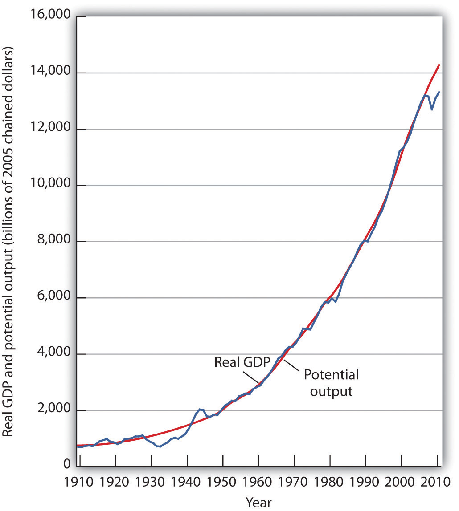
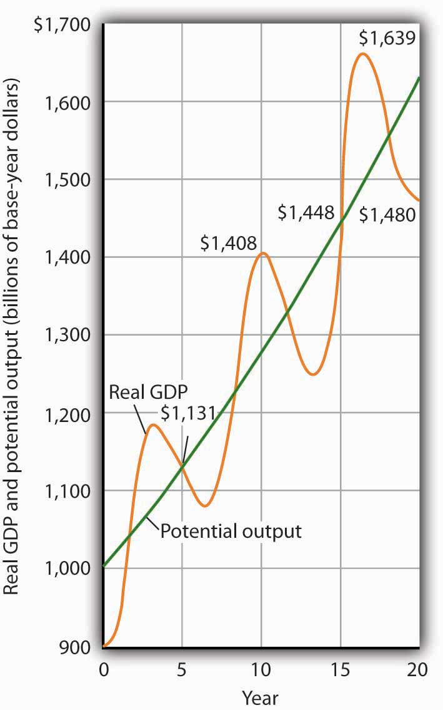
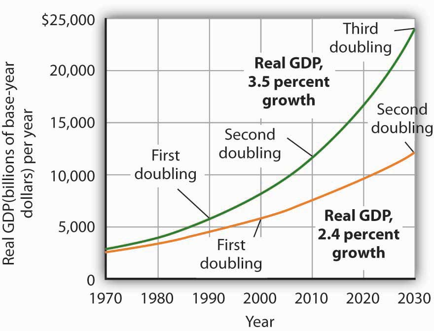

To demonstrate the impact of economic growth on living standards of a nation, we must start with a clear definition of economic growth and then study its impact over time. We will also see how population growth affects the relationship between economic growth and the standard of living an economy is able to achieve.
Economic growth is a long-run process that occurs as an economy’s potential output increases. Changes in real GDP from quarter to quarter or even from year to year are short-run fluctuations that occur as aggregate demand and short-run aggregate supply change. Regardless of media reports stating that the economy grew at a certain rate in the last quarter or that it is expected to grow at a particular rate during the next year, short-run changes in real GDP say little about economic growth. In the long run, economic activity moves toward its level of potential output. Increases in potential constitute economic growth.
Earlier we defined economic growth as the process through which an economy achieves an outward shift in its production possibilities curve. How does a shift in the production possibilities curve relate to a change in potential output? To produce its potential level of output, an economy must operate on its production possibilities curve. An increase in potential output thus implies an outward shift in the production possibilities curve. In the framework of the macroeconomic model of aggregate demand and aggregate supply, we show economic growth as a shift to the right in the long-run aggregate supply curve.
There are three key points about economic growth to keep in mind:
Figure 23.1 "A Century of Economic Growth" shows the record of economic growth for the U.S. economy over the past century. The graph shows annual levels of actual real GDP and of potential output. We see that the economy has experienced dramatic growth over the past century; potential output has soared nearly 20-fold. The figure also reminds us of a central theme of our analysis of macroeconomics: real GDP fluctuates about potential output. Real GDP sagged well below its potential (initially more than 40% below and then remaining at about 20% below for most of the decade) during the Great Depression of the 1930s and rose well above its potential (about 30% above) as the nation mobilized its resources to fight World War II. With the exception of these two periods, real GDP has remained fairly close to the economy’s potential output. In the recession of 1981, real GDP was about 6.5% below its potential, and during the recession that began at the end of 2007, real GDP fell nearly 8% below its potential. In 2011, the economy was still about 6.8% below its potential. Nonetheless, since 1950, the actual level of real GDP has deviated from potential output by an average of less than 2%.
Figure 23.1 A Century of Economic Growth
At the start of the 21st century, the level of potential output reached a level nearly 20 times its level a century earlier. Over the years, actual real GDP fluctuated about a rising level of potential output.
Sources: 1910–1949 data from Christina D. Romer, “World War I and the Postwar Depression: A Reinterpretation Based on Alternative Estimates of GNP,” Journal of Monetary Economics 22 (1988): 91–115; data for 1950–2010 from Congressional Budget Office, The Budget and Economic Outlook: An Update, August 2011 and from Bureau of Economic Analysis, NIPA Table 1.1.6.
We urge you to take some time with Figure 23.1 "A Century of Economic Growth". Over the course of the last century, it is economic growth that has taken center stage. Certainly, the fluctuations about potential output have been important. The recessionary gaps—periods when real GDP slipped below its potential—were often wrenching experiences in which millions of people endured great hardship. The inflationary gaps—periods when real GDP rose above its potential level—often produced dramatic increases in price levels. Those fluctuations mattered. It was the unemployment and/or the inflation that came with them that made headlines. But it was the quiet process of economic growth that pushed living standards ever higher. We must understand growth if we are to understand how we got where we are, and where we are likely to be going during the 21st century.
Figure 23.2 "Cyclical Change Versus Growth" tells us why we use changes in potential output, rather than actual real GDP, as our measure of economic growth. Actual values of real GDP are affected not just by changes in the potential level of output, but also by the cyclical fluctuations about that level of output.
Given our definition of economic growth, we would say that the hypothetical economy depicted in Figure 23.2 "Cyclical Change Versus Growth" grew at a 2.5% annual rate throughout the period. If we used actual values of real GDP, however, we would obtain quite different interpretations. Consider, for example, the first decade of this period: it began with a real GDP of $900 billion and a recessionary gap, and it ended in year 10 with a real GDP of $1,408 billion and an inflationary gap. If we record growth as the annual rate of change between these levels, we find an annual rate of growth of 4.6%—a rather impressive performance.
Figure 23.2 Cyclical Change Versus Growth
The use of actual values of real GDP to measure growth can give misleading results. Here, an economy’s potential output (shown in green) grows at a steady rate of 2.5% per year, with actual values of real GDP fluctuating about that trend. If we measure growth in the first 10 years as the annual rate of change between beginning and ending values of real GDP, we get a growth rate of 4.6%. The rate for the second decade is 0.5%. Growth estimates based on changes in real GDP are affected by cyclical changes that do not represent economic growth.
Now consider the second decade shown in Figure 23.2 "Cyclical Change Versus Growth". It began in year 10, and it ended in year 20 with a recessionary gap. If we measure the growth rate over that period by looking at beginning and ending values of actual real GDP, we compute an annual growth rate of 0.5%. Viewed in this way, performance in the first decade is spectacular while performance in the second is rather lackluster. But these figures depend on the starting and ending points we select; the growth rate of potential output was 2.5% throughout the period.
By measuring economic growth as the rate of increase in potential output, we avoid such problems. One way to do this is to select years in which the economy was operating at the natural level of employment and then to compute the annual rate of change between those years. The result is an estimate of the rate at which potential output increased over the period in question. For the economy shown in Figure 23.2 "Cyclical Change Versus Growth", for example, we see that real GDP equaled its potential in years 5 and 15. Real GDP in year 5 was $1,131, and real GDP in year 15 was $1,448. The annual rate of change between these two years was 2.5%. If we have estimates of potential output, of course, we can simply compute annual rates of change between any two years.
The Case in Point on presidents and growth at the end of this section suggests a startling fact: the U.S. growth rate began slowing in the 1970s, did not recover until the mid-1990s, only to slow down again in the 2000s. The question we address here is: does it matter? Does a percentage point drop in the growth rate make much difference? It does. To see why, let us investigate what happens when a variable grows at a particular percentage rate.
Suppose two economies with equal populations start out at the same level of real GDP but grow at different rates. Economy A grows at a rate of 3.5%, and Economy B grows at a rate of 2.4%. After a year, the difference in real GDP will hardly be noticeable. After a decade, however, real GDP in Economy A will be 11% greater than in Economy B. Over longer periods, the difference will be more dramatic. After 100 years, for example, income in Economy A will be nearly three times as great as in Economy B. If population growth in the two countries has been the same, the people of Economy A will have a far higher standard of living than those in Economy B. The difference in real GDP per person will be roughly equivalent to the difference that exists today between Great Britain and Mexico.
Over time, small differences in growth rates create large differences in incomes. An economy growing at a 3.5% rate increases by 3.5% of its initial value in the first year. In the second year, the economy increases by 3.5% of that new, higher value. In the third year, it increases by 3.5% of a still higher value. When a quantity grows at a given percentage rate, it experiences exponential growthWhen a quantity grows at a given percentage rate.. A variable that grows exponentially follows a path such as those shown for potential output in Figure 23.1 "A Century of Economic Growth" and Figure 23.2 "Cyclical Change Versus Growth". These curves become steeper over time because the growth rate is applied to an ever-larger base.
A variable growing at some exponential rate doubles over fixed intervals of time. The doubling time is given by the rule of 72A variable’s approximate doubling time equals 72 divided by the growth rate, stated as a whole number., which states that a variable’s approximate doubling time equals 72 divided by the growth rate, stated as a whole number. If the level of income were increasing at a 9% rate, for example, its doubling time would be roughly 72/9, or 8 years.Notice the use of the words roughly and approximately. The actual value of an income of $1,000 growing at rate r for a period of n years is $1,000 × (1 + r)n. After 8 years of growth at a 9% rate, income would thus be $1,000 (1 + 0.09)8 = $1,992.56. The rule of 72 predicts that its value will be $2,000. The rule of 72 gives an approximation, not an exact measure, of the impact of exponential growth.
Let us apply this concept of a doubling time to the reduction in the U.S. growth rate. Had the U.S. economy continued to grow at a 3.5% rate after 1970, then its potential output would have doubled roughly every 20 years (72/3.5 = 20). That means potential output would have doubled by 1990, would double again by 2010, and would double again by 2030. Real GDP in 2030 would thus be eight times as great as its 1970 level. Growing at a 2.4% rate, however, potential output doubles only every 30 years (72/2.4 = 30). It would take until 2000 to double once from its 1970 level, and it would double once more by 2030. Potential output in 2030 would thus be four times its 1970 level if the economy grew at a 2.4% rate (versus eight times its 1970 level if it grew at a 3.5% rate). The 1.1% difference in growth rates produces a 100% difference in potential output by 2030. The different growth paths implied by these growth rates are illustrated in Figure 23.3 "Differences in Growth Rates".
Figure 23.3 Differences in Growth Rates
The chart suggests the significance in the long run of a small difference in the growth rate of real GDP. We begin in 1970, when real GDP equaled $2,873.9 billion. If real GDP grew at an annual rate of 3.5% from that year, it would double roughly every 20 years: in 1990, 2010, and 2030. Growth at a 2.4% rate, however, implies doubling every 30 years: in 2000 and 2030. By 2030, the 3.5% growth rate leaves real GDP at twice the level that would be achieved by 2.4% growth.
Of course, it is not just how fast potential output grows that determines how fast the average person’s material standard of living rises. For that purpose, we examine economic growth on a per capita basis. An economy’s output per capitaReal GDP per person. equals real GDP per person. If we let N equal population, then
Equation 23.1
In the United States in the third quarter of 2010, for example, real GDP was $13,277.4 billion (annual rate). The U.S. population was 311.0 million. Real U.S. output per capita thus equaled $42,693.
We use output per capita as a gauge of an economy’s material standard of living. If the economy’s population is growing, then output must rise as rapidly as the population if output per capita is to remain unchanged. If, for example, population increases by 2%, then real GDP would have to rise by 2% to maintain the current level of output per capita. If real GDP rises by less than 2%, output per capita will fall. If real GDP rises by more than 2%, output per capita will rise. More generally, we can write:
Equation 23.2
For economic growth to translate into a higher standard of living on average, economic growth must exceed population growth. From 1970 to 2004, for example, Sierra Leone’s population grew at an annual rate of 2.1% per year, while its real GDP grew at an annual rate of 1.4%; its output per capita thus fell at a rate of 0.7% per year. Over the same period, Singapore’s population grew at an annual rate of 2.1% per year, while its real GDP grew 7.4% per year. The resultant 5.3% annual growth in output per capita transformed Singapore from a relatively poor country to a country with the one of the highest per capita incomes in the world.
Suppose an economy’s potential output and real GDP is $5 million in 2000 and its rate of economic growth is 3% per year. Also suppose that its population is 5,000 in 2000, and that its population grows at a rate of 1% per year. Compute GDP per capita in 2000. Now estimate GDP and GDP per capita in 2072, using the rule of 72. At what rate does GDP per capita grow? What is its doubling time? Is this result consistent with your findings for GDP per capita in 2000 and in 2072?
| President | Annual Increase in Real GDP (%) | Growth Rate (%) |
|---|---|---|
| Truman 1949–1952 | 5.4 | 4.4 |
| Eisenhower 1953–1960 | 2.5 | 3.3 |
| Kennedy-Johnson 1961–1968 | 5.1 | 4.4 |
| Nixon-Ford 1969–1976 | 2.8 | 3.4 |
| Carter 1977–1980 | 3.2 | 3.1 |
| Reagan 1981–1988 | 3.5 | 3.1 |
| G. H. W. Bush 1989–1992 | 2.1 | 2.9 |
| Clinton 1993–2000 | 3.8 | 3.3 |
| G. W. Bush 2001–2008 | 1.6 | 2.6 |
Presidents are often judged by the rate at which the economy grew while they were in office. This test is unfair on two counts. First, a president has little to do with the forces that determine growth. And second, such tests simply compute the annual rate of growth in real GDP over the course of a presidential term, which we know can be affected by cyclical factors. A president who takes office when the economy is down and goes out with the economy up will look like an economic star; a president with the bad luck to have reverse circumstances will seem like a dud. Here are annual rates of change in real GDP for each of the postwar presidents, together with rates of economic growth, measured as the annual rate of change in potential output.
The presidents’ economic records are clearly affected by luck. Presidents Truman, Kennedy, Reagan, and Clinton, for example, began their terms when the economy had a recessionary gap and ended them with an inflationary gap or at about potential output. Real GDP thus rose faster than potential output during their presidencies. The Eisenhower, Nixon-Ford, G. H. W. Bush, and G. W. Bush administrations each started with an inflationary gap or at about potential and ended with a recessionary gap, thus recording rates of real GDP increase below the rate of gain in potential. Only Jimmy Carter, who came to office and left it with recessionary gaps, presided over a relatively equivalent rate of increase in actual GDP versus potential output.
How did Barack Obama fare? As this case was written after he was in office for less than a full term, you will have to check for yourself!
GDP per capita in 2000 equals $1,000 ($5,000,000/5,000). If GDP rises 3% per year, it doubles every 24 years (= 72/3). Thus, GDP will be $10,000,000 in 2024, $20,000,000 in 2048, and $40,000,000 in 2072. Growing at a rate of 1% per year, population will have doubled once by 2072 to 10,000. GDP per capita will thus be $4,000 (= $40,000,000/10,000). Notice that GDP rises by eight times its original level, while the increase in GDP per capita is fourfold. The latter value represents a growth rate in output per capita of 2% per year, which implies a doubling time of 36 years. That gives two doublings in GDP per capita between 2000 and 2072 and confirms a fourfold increase.